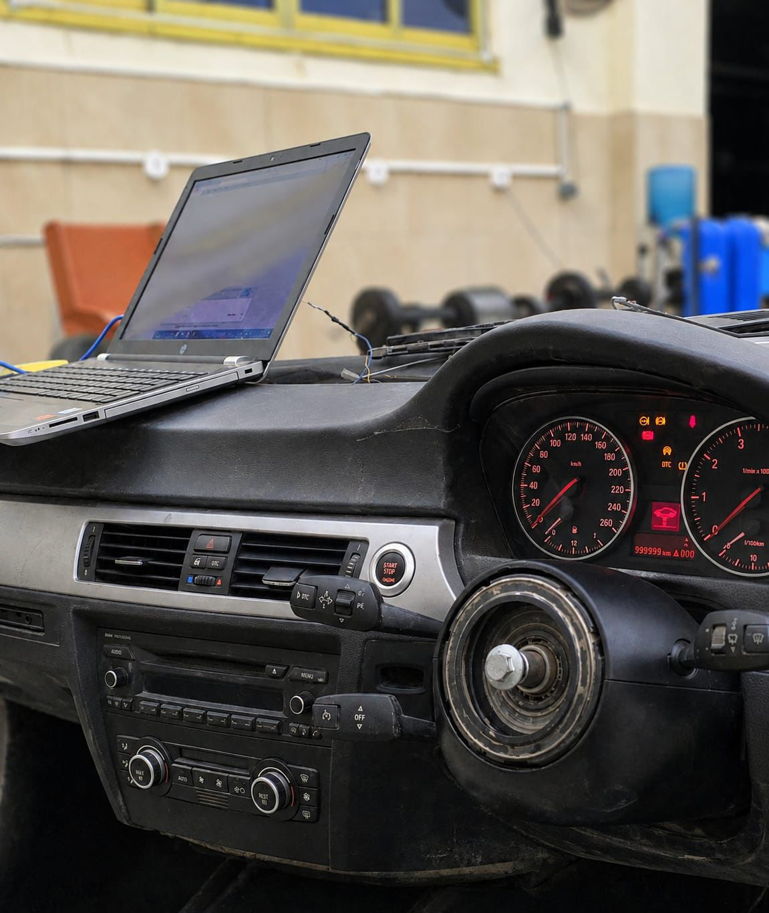
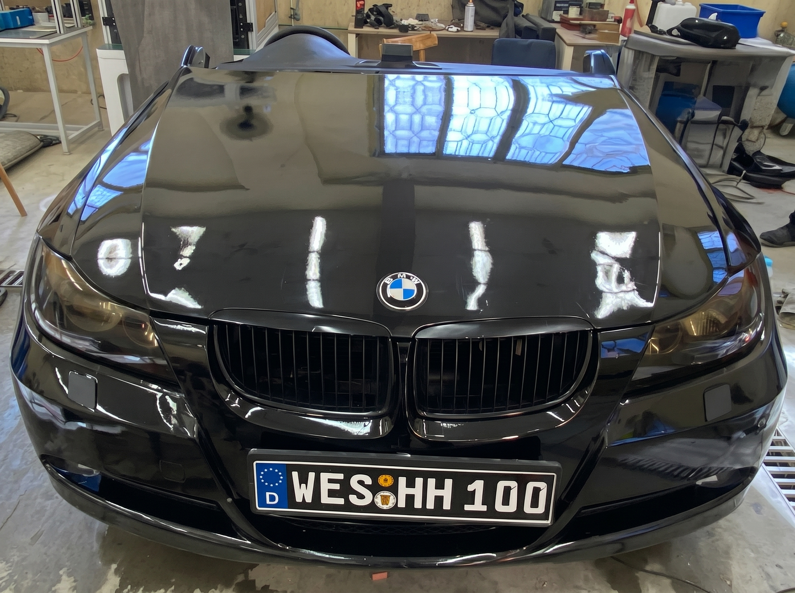
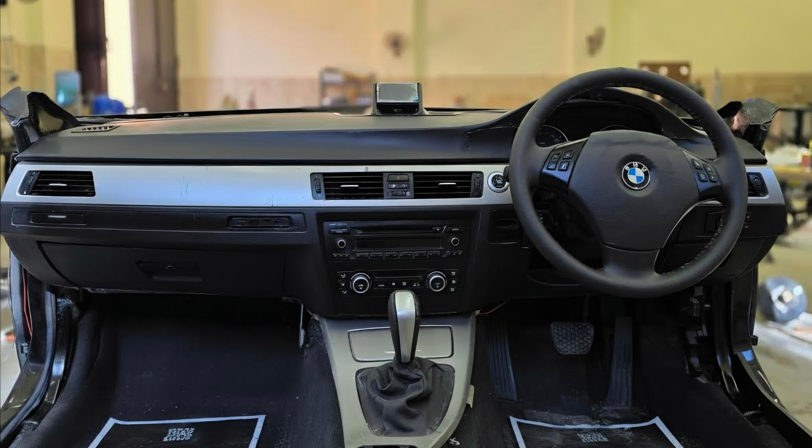
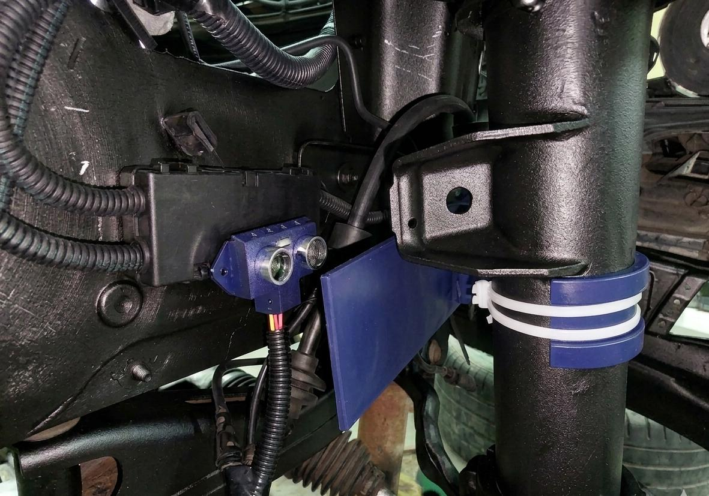
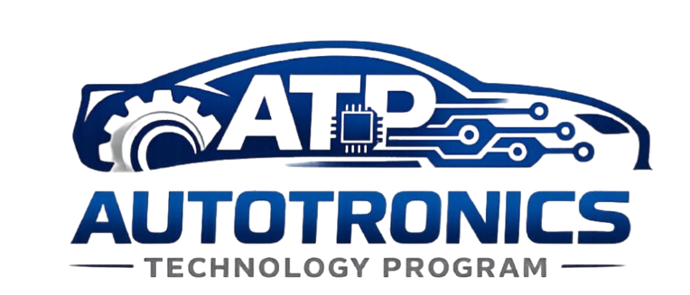

Suspension & Brake Diagnosis
A salvaged BMW E90 front-cut, rebuilt into a laboratory-grade suspension & brake diagnostic platform.
We turned a wreck into a measuring tool.
It started as a wrecked BMW E90 front-cut. The body, interior, engine bay, steering and suspension were all worn out and falling apart.
Our goal was simple to say but hard to do: turn this wreck into a precise wheel-alignment tool. First we had to make it solid again — a full rebuild, because no sensor can be trusted on a shaky car.

The same car — now measured down to a tenth of a degree.
Before → After
Drag the handle. Same car, same angle — months of hard work in between.



Structural & mechanical overhaul
We fixed the body, realigned the wheels and gave it a clean coat of paint. Then we took apart the whole front suspension, steering rack and brakes, cleaned every piece, and put it all back together like new.
Rebuilding the dashboard, not replacing it.
Years of sun and rain had left the plastics dry and brittle. The dashboard was a mess of deep cracks and broken bits. Instead of buying a new one, we rebuilt the old one by hand — filling the cracks and bringing its shape back to clean and solid.


Every mount drawn and printed in-house.
Two sensors do the measuring: a throttle-position sensor (TPS), reused to read toe angle, and ultrasonic sensors for camber. No ready-made bracket fit our car, so we designed every mount and case ourselves in SolidWorks and 3D-printed them in PLA.


We made every 3D model and drawing ourselves. Nothing was downloaded or copied.
We spent days measuring the real E90 chassis, drawing the parts, and testing the fit until everything lined up perfectly.
The old wiring was ruined, so we built a brand-new harness from scratch. We mapped the power, routed clean signal lines for the Arduino sensors, and blocked out noise to keep the readings accurate. About fifty metres of wire — all hand-built, mounted and insulated neatly on the car.


Reviving the BMW cluster.
The real BMW dashboard cluster won’t light up without the car’s computers. So we listened in on the CAN messages from a working E90 and decoded the IDs — months of trial and error — until the cluster finally powered on and lit up. That was the moment it started to feel like a real car again.
Three Arduinos, one job each.
To keep everything fast and smooth, we split the work across three boards. Each one has a single job, so nothing slows down and alerts show up the instant they happen.
Sits next to the sensors and reads all the raw data coming from the suspension and brakes.
Sits next to Arduino 1 and talks to the BMW cluster through the CAN module.
Takes the data from Arduino 1 and only runs the screen — its own board means zero delay on live alerts.
Built to look factory.
We wanted the screen to look like it came with the car. So we designed and 3D-printed a custom mount and fitted it right into the centre air vent — a clean, solid home for the live data.

Read toe and camber, the way the bench does.
Drag a wheel. The numbers follow the same two angles the platform measures — toe from the TPS, camber from the ultrasonics — and warn you the moment one goes out of range.
At a glance
Specification- Platform
- BMW E90 front-cut — fully restored mechanicals
- Wiring harness
- ≈ 50 m — hand-built from scratch
- Compute
- 3 × Arduino — distributed, one task each
- Bus
- MCP2515 CAN — genuine BMW cluster revived
- Sensing
- TPS → toe angle · ultrasonic → camber angle
- Fabrication
- SolidWorks CAD · PLA 3D printing — all parts original
- Ahmed Saeed
- Group lead · Mechanical · Electronics / CAN-bus · Software · CAD · Docs & testing
- Zeyad Ayman
- Operations manager · Financial control · Sourcing · Display design · Testing lead · Docs
- Mostafa Refaat
- Mechanical lead · CAD · Wiring harness design & install
- Omar Ayman
- Mechanical · Project assistant · Material supply
- Abdullah Mohamed
- Core partner · Negotiation
- Abdelrahman Wageh
- Core partner · Negotiation
- Hager Fathy
- Harness check · Core partner
